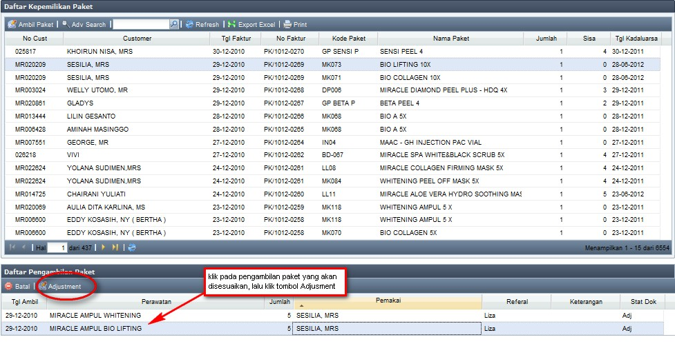
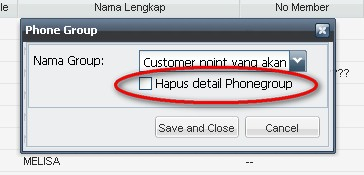
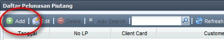
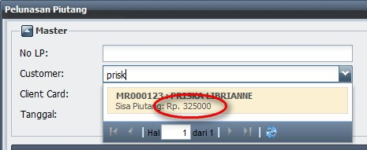

Ubah Status Tindakan
Ubah Status Tindakan Medis
- Setiap Customer yang akan melakukan perawatan medis dan sudah "datang", secara otomatis akan muncul di Daftar Tindakan Medis. Klik Refresh jika Customer masih belum muncul di Daftar Tindakan Medis.
(note: jika setelah di-Refresh Customer masih belum muncul di Daftar Tindakan Medis, maka segera laporkan ke CRO, karena kemungkinan Status Appointment belum diubah menjadi "datang")

- Status awal Tindakan customer adalah "datang"
- Ubah Perawatan customer ke Perawatan yang sesuai

- Ubah Status dari "datang" menjadi "tindakan".
Note:
- “tindakan” adalah saat ketika tim Medis / Non Medis menangani customer. Segera ganti status menjadi “tindakan” sesaat sebelum menjemput customer

Note:
- Pada setiap penggantian status, sistem selalu mencatat waktunya, sehingga akan diketahui seberapa cepat / lama waktu tunggu customer serta seberapa tepat waktu tindakan dilakukan.

- Jika Customer memiliki Paket, dobel klik kolom Ambil Paket, jika Customer memiliki paket pada nama perawatan yang bersangkutan, maka akan muncul daftar paket yang dimiliki oleh Customer. Klik pada paket yang diinginkan. Jika Customer tidak jadi mengambil paket, maka pilih list "TIDAK JADI Ambil Paket"..

Note:
- Ubah Jumlah sesuai kebutuhan pada kolom Jml

- Dokter akan melakukan tindakan. Setelah Dokter selesai melakukan tindakan, segera ubah Status menjadi "selesai"
Note:
- Untuk memudah CRO mengatur jadwal Dokter / Suster, ubah Status menjadi "selesai" hanya sesaat sebelum tindakan selesai
- Status yang sudah diubah menjadi "selesai", akan segera muncul di Kasir untuk dibuatkan Faktur.
- Pastikan semua data sudah terinput dengan benar sebelum Customer menuju ke Kasir untuk melakukan pembayaran.
Copyright © 2010, IT Department of Miracle Aesthetic Clinic Group
Created with the Freeware Edition of HelpNDoc: Create HTML Help, DOC, PDF and print manuals from 1 single source